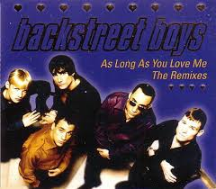

Vietnamese-German University
Foundation Year
English for Computer Science
Backstreet Boys
The Backstreet Boys (often abbreviated as BSB) are an American vocal group formed in Orlando, Florida
in 1993.The group consists of A. J. McLean, Howie D., Nick Carter, Kevin Richardson, and Brian Littrell.
The group rose to fame with their debut international album, Backstreet Boys (1996). In the following year
they released their second international album Backstreet's Back (1997), and their U.S. debut album which
continued the group's success worldwide. They rose to superstardom with their third studio album
Millennium (1999) and its follow-up album, Black & Blue (2000).
After a two-year hiatus, they regrouped and released a comeback album Never Gone (2005). After the conclusion
of the Never Gone Tour in 2006, Richardson left the group to pursue other interests. The group then released
two albums as a quartet: Unbreakable (2007) and This Is Us (2009).
In 2012, the group announced that Richardson had rejoined them permanently. In the following year they
celebrated their 20th anniversary and released their first independent album, In a World Like This (2013).
The group also released their first documentary movie, titled Backstreet Boys: Show 'Em What You're Made Of
in January 2015
The Backstreet Boys have sold over 140 million records worldwide, making them the best-selling boy band
in history, and one of the world's best-selling music artists. They are the first group since Sade to have
their first nine albums reach the top 10 on the Billboard 200, and the only boy band to do so. They also
received a star on the Hollywood Walk of Fame on April 22, 2013.
Reference for a biography above
First song: As long as you love me

Lyrics
Although loneliness has always been a friend of mine
I'm leavin' my life in your hands
People say I'm crazy and that I am blind
Risking it all in a glance
And how you got me blind is still a mystery
I can't get you out of my head
Don't care what is written in your history
As long as you're here with me
I don't care who you are
Where you're from
What you did
As long as you love me
Who you are
Where you're from
Don't care what you did
As long as you love me
Every little thing that you have said and done
Feels like it's deep within me
Doesn't really matter if you're on the run
It seems like we're meant to be
I don't care who you are (who you are)
Where you're from (where you're from)
What you did
As long as you love me (I don't know)
Who you are (who you are)
Where you're from (where you're from)
Don't care what you did
As long as you love me (yeah)
I've tried to hide it so that no one knows
But I guess it shows
When you look into my eyes
What you did and where you're comin from
I don't care, as long as you love me, baby
I don't care who you are (who you are)
Where you're from (where you're from)
What you did
As long as you love me (as long as you love me)
Who you are (who you are)
Where you're from (where you're from)
Don't care what you did (yeah)
As long as you love me (as long as you love me)
Who you are (who you are)
Where you're from
What you did
As long as you love me
Who you are (who you are)
Where you're from (where you're from)
As long as you love me
Who you are
As long as you love me
What you did (I don't care)
As long as you love me
Go to home page
go to the top of page
reference for a the song above
Second Song: I want it that way
Lyrics
Yeah
You are my fire
The one desire
Believe when I say
I want it that way
But we are two worlds apart
Can't reach to your heart
When you say
That I want it that way
[Chorus:]
Tell me why
Ain't nothin' but a heartache
Tell me why
Ain't nothin' but a mistake
Tell me why
I never wanna hear you say
I want it that way
Am I your fire
Your one desire
Yes I know it's too late
But I want it that way
[Chorus]
Now I can see that we're falling apart
From the way that it used to be, yeah
No matter the distance
I want you to know
That deep down inside of me...
You are my fire
The one desire
You are
You are, you are, you are
Don't wanna hear you say
Ain't nothin' but a heartache
Ain't nothin' but a mistake
(Don't wanna hear you say)
I never wanna hear you say
I want it that way
Tell me why
Ain't nothin' but a heartache
Tell me why
Ain't nothin but a mistake
Tell me why
I never wanna hear you say
(Don't wanna hear you say it)
I want it that way
I want it that way
Go to home page
go to the top of page
reference for a the song above
Third song: Show me the meaning of being lonely
Lyrics
Show me the meaning of being lonely
So many words for the broken heart
It's hard to see in a crimson love
So hard to breathe
Walk with me, and maybe
Nights of light so soon become
Wild and free I could feel the sun
Your every wish will be done
They tell me
[Chorus:]
Show me the meaning of being lonely
Is this the feeling I need to walk with
Tell me why I can't be there where you are
There's something missing in my heart
Life goes on as it never ends
Eyes of stone observe the trends
They never say forever gaze upon me
Guilty roads to an endless love (endless love)
There's no control
Are you with me now?
Your every wish will be done
They tell me
[Chorus]
There's nowhere to run
I have no place to go
Surrender my heart, body, and soul
How can it be
You're asking me
To feel the things you never show
You are missing in my heart
Tell me why can't I be there where you are?
Go to home page
go to the top of page
reference for a the song above
References